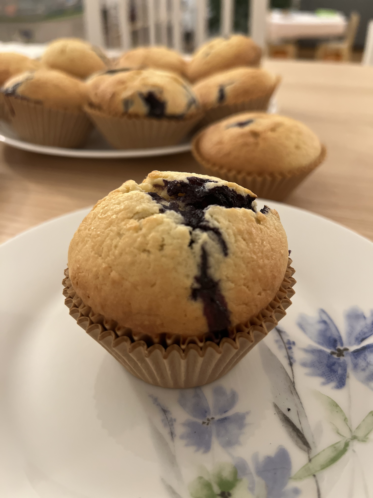

Classic Blueberry Muffin
back to home

Description
This easy blueberry muffin recipe is an Epicurious classic. The muffins are slightly sweet, but not so sweet you’d mistake them for cupcakes, and chock-full of fresh blueberries. (You can use frozen blueberries, too. Just don’t thaw them before folding them in, or you risk soggy muffins.) The batter has a bit of sour cream, giving the muffins a very tender crumb and a gentle tang. Before baking, you’ll add a pinch of coarse sugar to the top of the muffins to gild them with a shimmery, crunchy dome. The result: the best blueberry muffins we’ve ever had.
Ingredients
- 2 1/2 cups all-purpose flour
- 1 1/4 cups granulated sugar
- 2 tsp. baking powder
- 1/2 tsp. kosher salt
- 2 large eggs
- 1 cup sour cream
- 1/2 cup whole milk
- 1 tsp. vanilla extract
- 3/4 cup (1 1/2 sticks) unsalted butter, melted
- 1 1/2 cups blueberries (about 8 ounces)
- 3 Tbsp. coarse sugar
Steps
- Preheat oven to 375°F. Line muffin pan with liners. Whisk flour, granulated sugar, baking powder, and salt in a large bowl.
- Whisk eggs, sour cream, milk, and vanilla in a medium bowl.
- Mix egg mixture into dry ingredients, then stir in butter. Fold in blueberries.
- Divide batter among muffin cups, filling to the brim (about ½ cup batter per muffin). Sprinkle with coarse sugar.
- Bake muffins, rotating pan halfway through, until golden brown and a tester inserted into the center comes out clean, 28–33 minutes.
- Let cool in pan 5 minutes, then transfer muffins to a wire rack and let cool completely.
Do Ahead: Muffins can be made 3 days ahead. Transfer to an airtight container and store at room temperature, or freeze up to 2 months.